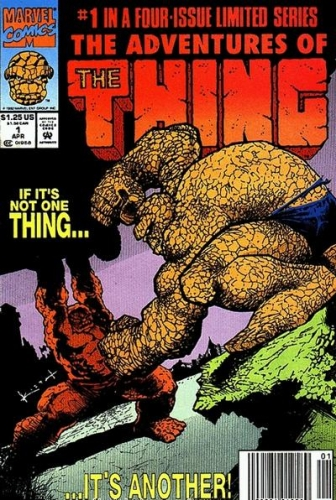

The Adventures of the Thing

Series: 4 issue mini series
Illustrator: Sam Kieth, John Byrne
Writer: John Byrne
Publisher: 1992 Marvel
About: Team-up of the Thing and himself in a time-travel story. Reprint of Marvel Two-In-One (1974 series) #50 with new cover.